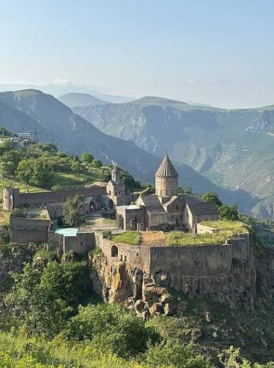

Գառնի և Գեղարդ
Գառնիի հեթանոսական տաճարը և Գեղարդի վանական համալիրը Հայաստանի ամենահայտնի պատմական տեսարժան վայրերից են։
Կարդալ Գառնիի մասինԲացահայտի՛ր Հայաստանի գեղեցկությունը մեզ հետ
Հայաստան Տուր զբոսաշրջային գործակալությունը առաջարկում է հետաքրքիր և բազմազան ճանապարհորդություններ Հայաստանի պատմական ու մշակութային վայրերով։
Մեր նպատակն է օգնել ճանապարհորդներին բացահայտել Հայաստանի ամենագեղեցիկ վայրերը և վայելել հետաքրքիր ուղևորություններ։
Գառնիի հեթանոսական տաճարը և Գեղարդի վանական համալիրը Հայաստանի ամենահայտնի պատմական տեսարժան վայրերից են։
Կարդալ Գառնիի մասինՏուրի արժեքը ներառում է հիմնական տրանսպորտային ծառայությունները։ Ամրագրումը պետք է կատարել նախապես։
Մեր ուղեկցորդները աշխատում են բարեհամբույր և պրոֆեսիոնալ մոտեցմամբ։ Նրանք միշտ պատրաստ են օգնել ճանապարհորդներին։
Կարևոր տեղեկություն. Որոշ երթուղիներ կարող են փոխվել եղանակային պայմանների պատճառով։
Սովորական արժեքը՝ 30,000 դրամ,
հատուկ առաջարկի արժեքը՝ 25,000 դրամ։
Նախկին արժեքը՝ 35,000 դրամ,
նոր արժեքը՝ 28,000 դրամ։
Ջրի քիմիական բանաձևն է H2O, իսկ տարածքի չափման օրինակ կարող է լինել 25m2։
Գները կարող են փոփոխվել՝ կախված ընտրված ծրագրից։ Ամրագրումից առաջ խնդրում ենք ճշտել վերջնական արժեքը։
Մենք առաջարկում ենք Հայաստանի տարբեր մարզերով կազմակերպվող մեկօրյա և բազմօրյա ճանապարհորդություններ։

Բացահայտեք Գառնիի հեթանոսական տաճարը և Գեղարդի վանական համալիրը։ Այս ճանապարհորդությունը համատեղում է Հայաստանի պատմությունը, մշակույթը և բնության գեղեցկությունը։ Ուղևորության ընթացքում կարող եք տեսնել հնագույն ճարտարապետություն և ծանոթանալ հայկական ավանդույթներին։
Ամրագրել
Հանգստացեք Սևանա լճի ափին, այցելեք Սևանավանք և բացահայտեք Հայաստանի բնության գեղեցկությունը։
Ամրագրել
Այցելեք Տաթևի վանք, օգտվեք աշխարհի երկար ճոպանուղիներից մեկից և բացահայտեք Սյունիքի պատմամշակութային ժառանգությունը։
Ամրագրել
Բացահայտեք Դիլիջանի անտառները, հին քաղաքային փողոցները և Հաղարծինի վանական համալիրը։
ԱմրագրելԱյցելեք Խոր Վիրապի վանքը և վայելեք Արարատ լեռան գեղեցիկ տեսարանը։
Ամրագրել
Ճանաչեք միջնադարյան Ամբերդ ամրոցը և Հայաստանի պատմական ճարտարապետական ժառանգությունը։
Ամրագրել
Ստորև ներկայացված են երեք փորձնական տարրերը։
Փորձարկման ընթացքում կարելի է ժամանակավորապես կիրառել
display: none և visibility: hidden։
Հղումների ցուցադրում՝
| Երթուղի | Տևողություն | Սկիզբ | Արժեք | Տեսակ |
|---|---|---|---|---|
| Գառնի — Գեղարդ | 1 օր | 09:00 | 25,000 դրամ | Պատմամշակութային |
| 1 օր | 10:00 | 28,000 դրամ | Պատմամշակութային | |
| Սևան | 1 օր | 08:30 | 20,000 դրամ | Բնության |
| Դիլիջան | 09:00 | 22,000 դրամ | Բնության | |
| Տաթև | 2 օր | 07:30 | 45,000 դրամ | Մշակութային |
| Տեղերը սահմանափակ են, նախապես ամրագրումը ցանկալի է | Հայաստան Տուր | |||
Ծանոթացեք Հայաստանի հայտնի զբոսաշրջային վայրերին։
Աուդիոյի տեքստային տարբերակ. Բարի գալուստ Հայաստան Տուր։ Բացահայտեք Հայաստանի պատմական, մշակութային և բնական տեսարժան վայրերը։
HTML-ը վեբ էջերի կառուցվածքը նկարագրող լեզու է։
Զբոսաշրջություն՝ ճանապարհորդություն և այցելություն տարբեր վայրեր հանգստի, ճանաչողական կամ այլ նպատակներով։
Ճանապարհորդությունը հնարավորություն է բացահայտելու նոր վայրեր, մշակույթներ և մարդկանց։
Մեր ուղեկցորդը հաճախ ասում է՝
Ճանապարհորդությունը սկսվում է առաջին քայլից
։
Տեղեկատվության աղբյուր՝ Հայաստան Տուր տեղեկատվական նյութեր։
<p>Բարի գալուստ Հայաստան։</p>Պահպանելու համար սեղմեք Ctrl + S։
Համակարգի օրինակային պատասխանը՝ Tour successfully booked.
Եթե n-ը զբոսաշրջիկների քանակն է, ապա ընդհանուր արժեքը կախված է n-ից։
Գառնիի շրջագայությունը սկսվում է -ին։
Սևանի երթուղին սկսվում է -ին։
Լրացրեք ձևը՝ ձեր նախընտրած ճանապարհորդության մասին ամրագրման հարցում ուղարկելու համար։
Այս բաժնի հաշվարկները կատարվում են JavaScript-ի միջոցով։ Արդյունքները տեսնելու համար բացեք դիտարկիչի Console բաժինը։